Artifact detection and rejection
Bruno Nicenboim
2026-11-14
Source:vignettes/artifacts.Rmd
artifacts.RmdAn EEG recording picks up much more than brain activity. A blink produces a deflection of more than 100 µV in the channels close to the eyes, a sideways eye movement shifts the voltage for as long as the eyes stay there, and the skin and the amplifier add slow drifts. These artifacts are many times larger than the effects that we usually care about, so we need to find them and decide what to do with them before we average anything.
In eeguana, this takes two steps. First, the
eeg_artif_*() functions look for artifacts in the signal
and write down where they found them in the events table, and they leave
the signal as it was. Then, eeg_events_to_NA() turns the
marked samples, or the entire segments that contain them, into
NA. Because the two steps are separate, we can plot what a
detector found and change its settings before we remove any data.
Suppose that we want to know what each detector finds and what it misses. With real data we never know for sure where the artifacts are, so we simulate a short recording in which we do.
Simulating a recording with artifacts
We simulate ten seconds of data, sampled at 500 Hz.
fs <- 500
n <- 10 * fs
time <- seq_len(n) / fsWe’ll use three kinds of artifacts:
- There are two blinks, 2.5 and 7.5 seconds into the recording. Each one is a smooth bump of 150 µV that lasts about a third of a second.
- There is one sideways eye movement. The eyes move to one side after 4.4 seconds and come back after 6.3 seconds, and in between the voltage is 40 µV higher.
- There is a slow drift that rises to 120 µV in the middle of the recording.
bump <- function(center, height, sd = .06) {
height * exp(-(time - center)^2 / (2 * sd^2))
}
blinks <- bump(2.5, 150) + bump(7.5, 150)
eye_movement <- ifelse(time > 4.4 & time <= 6.3, 40, 0)
drift <- 120 * sin(2 * pi * time / 20)Every channel also gets its own background noise. We use pink noise,
generated with rpink(), because its power falls as the
frequency increases, as it does in EEG. We scale it to a standard
deviation of roughly 5 µV.
noise <- function() rpink(n, scale = 65)To simplify matters, we put each artifact in a different channel: the blinks go in VEOG, the eye movement in HEOG, and the drift in Fz. The channel Cz has only noise, so that anything a detector marks there is a false alarm. (In a real recording, a blink also shows up in the frontal channels, and every channel can drift.)
eeg <- eeg_lst(
signal_tbl = data.frame(
VEOG = channel_dbl(blinks + noise()),
HEOG = channel_dbl(eye_movement + noise()),
Fz = channel_dbl(drift + noise()),
Cz = channel_dbl(noise()),
.id = 1L,
.sample = sample_int(seq_len(n), .sampling_rate = fs)
)
)plot() draws all the channels of an eeg_lst
on the same vertical scale, which it takes from the last channel. Our
channels have very different ranges, so we set the range ourselves with
coord_cartesian(). annotate_events() adds a
shaded rectangle for every event in the events table (so far there are
none). We’ll make this plot many times, so we wrap it in a function:
plot_artifacts <- function(x) {
plot(x) +
annotate_events() +
coord_cartesian(ylim = c(-40, 170)) +
theme(legend.position = "bottom", legend.direction = "vertical")
}
plot_artifacts(eeg)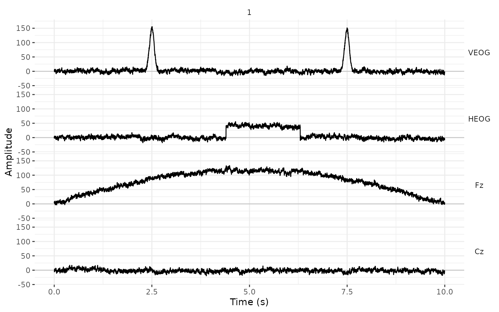
The detectors
All the detectors work in the same way. They take an
eeg_lst and, optionally, the channels to look at (all of
them by default, selected as in eeg_select()), and they
return the same eeg_lst with new rows in the events
table.
Peak-to-peak amplitude: eeg_artif_minmax()
eeg_artif_minmax() slides a window over each channel and
marks an artifact wherever the difference between the largest and the
smallest value inside the window is larger than .threshold.
This is the moving window peak-to-peak method that Luck (2014, Chapter 6) describes for telling
apart the segments with and without blinks. Because it compares values
that are close in time, it ignores the overall voltage level and slow
drifts.
eeg_minmax <- eeg |>
eeg_artif_minmax(.threshold = 100, .window = 200, .unit = "ms")
plot_artifacts(eeg_minmax)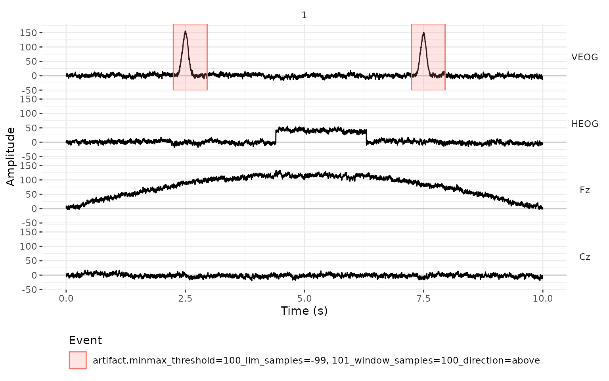
The detector marked both blinks and nothing else. The eye movement is too small for this threshold, and the drift changes too slowly: inside any window of 200 ms it moves only a few microvolts.
The new events have the type "artifact", and their
description records the detector and the settings that produced them.
The columns .initial and .final are the first
and the last sample of each marked interval, and .channel
is the channel where the artifact was found.
events_tbl(eeg_minmax)
#> .id .type
#> <int> <char>
#> 1: 1 artifact
#> 2: 1 artifact
#> .description
#> <char>
#> 1: minmax_threshold=100_lim_samples=-99, 101_window_samples=100_direction=above
#> 2: minmax_threshold=100_lim_samples=-99, 101_window_samples=100_direction=above
#> .initial .final .channel
#> <sample_int> <sample_int> <char>
#> 1: 1125 1480 VEOG
#> 2: 3623 3976 VEOGSteps: eeg_artif_step()
A sideways eye movement shifts the voltage of the HEOG channel from
one level to another, and the voltage stays there until the eyes move
back. eeg_artif_step() looks for that shape. It slides a
window over the signal and compares the mean of the first half of the
window with the mean of the second half; if they differ by more than
.threshold, it marks an artifact (Luck, 2014, Chapter 6).
eeg_step <- eeg |>
eeg_artif_step(.threshold = 30, .window = 200, .unit = "ms")
plot_artifacts(eeg_step)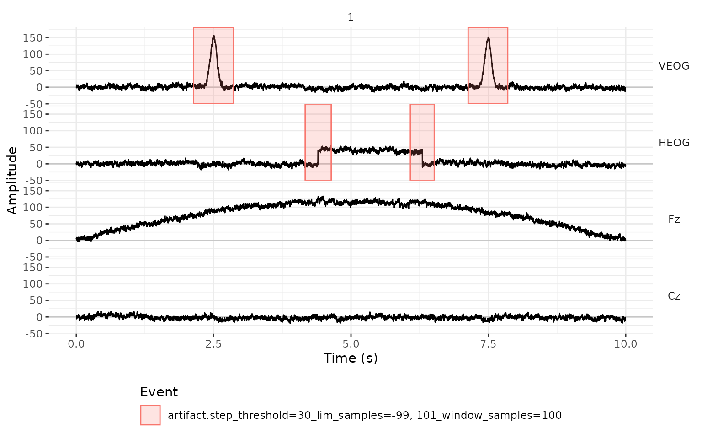
The detector found the two moments in which the eyes moved. It also marked the blinks, even though a blink doesn’t look like a step. The detector only sees 200 ms at a time: on the rising side of a blink, the first half of the window has a mean close to 0 µV and the second half a mean close to 100 µV, well above our threshold of 30 µV. It never checks whether the voltage stays at the new level, so a blink counts as a step up followed by a step down.
What separates the two is the channel: blinks are large in VEOG and small in HEOG, and sideways eye movements are the opposite. If we only want the eye movements, we restrict the detector to the HEOG channel:
eeg |>
eeg_artif_step(HEOG, .threshold = 30, .window = 200, .unit = "ms") |>
events_tbl()
#> .id .type .description .initial
#> <int> <char> <char> <sample_int>
#> 1: 1 artifact step_threshold=30_lim_samples=-99, 101_window_samples=100 2084
#> 2: 1 artifact step_threshold=30_lim_samples=-99, 101_window_samples=100 3041
#> .final .channel
#> <sample_int> <char>
#> 1: 2321 HEOG
#> 2: 3259 HEOGFor the EOG channels, a relatively low threshold such as 30 µV works well. For the other channels, where we look for large voltage jumps, a higher threshold (e.g., 50 to 100 µV) is more appropriate.
Peaks: eeg_artif_peak()
eeg_artif_peak() looks for peaks, that is, points that
are higher than the samples right before and after them (or lower, for
negative peaks). A peak counts when its voltage is beyond
.threshold. The threshold applies to the voltage itself,
measured from zero, and how much the peak stands out from the signal
around it plays no role. Here, .window is the minimum
distance between two peaks; when two of them are closer than that, only
the larger one counts.
eeg_peak <- eeg |>
eeg_artif_peak(.threshold = 100, .window = 200, .unit = "ms")
plot_artifacts(eeg_peak)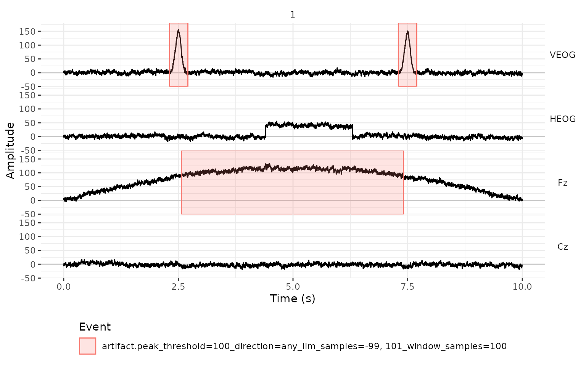
The detector found the blinks, but it also marked most of the middle of Fz. There, the drift brings the signal close to 120 µV, and the noise on top of it keeps producing peaks above 100 µV. This detector looks at the absolute voltage, so it only makes sense for a signal that stays around zero.
For this reason, all the detectors have a .freq argument
that filters the signal before looking for artifacts. With
.freq = c(1, 10), we band-pass filter the signal between 1
and 10 Hz, which removes the drift and most of the noise and keeps the
blinks. (For a high-pass filter, the second value is NA,
and for a low-pass filter, the first one is.) The filter is only used
for the detection, and the signal in the eeg_lst stays
unfiltered.
eeg_peak <- eeg |>
eeg_artif_peak(.threshold = 100, .window = 200, .unit = "ms", .freq = c(1, 10))
plot_artifacts(eeg_peak)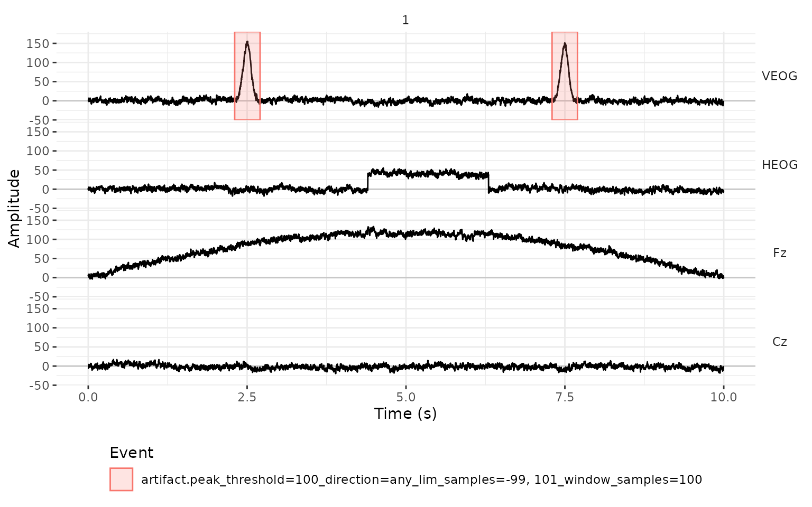
Now only the blinks are marked. Because each event is centered on the top of the blink, this detector is convenient when we need the blinks themselves, for example, to find the ICA components that follow them.
By default, eeg_artif_peak() looks for peaks in both
directions (.direction = "any"). If VEOG is the electrode
above the eye minus the electrode below it, a blink is always a positive
deflection, and we can ask only for positive peaks with
.direction = "above". With
.direction = "below", we get only the negative peaks, and
in our recording there are none:
eeg |>
eeg_artif_peak(VEOG, .threshold = 100, .direction = "below", .freq = c(1, 10)) |>
events_tbl()
#> Empty data.table (0 rows and 6 cols): .id,.type,.description,.initial,.final,.channelAbsolute amplitude: eeg_artif_amplitude()
The simplest detector marks every sample that falls outside of a
range of voltages. Here, .threshold takes two values, the
lower and the upper limit.
eeg_amplitude <- eeg |>
eeg_artif_amplitude(.threshold = c(-100, 100))
plot_artifacts(eeg_amplitude)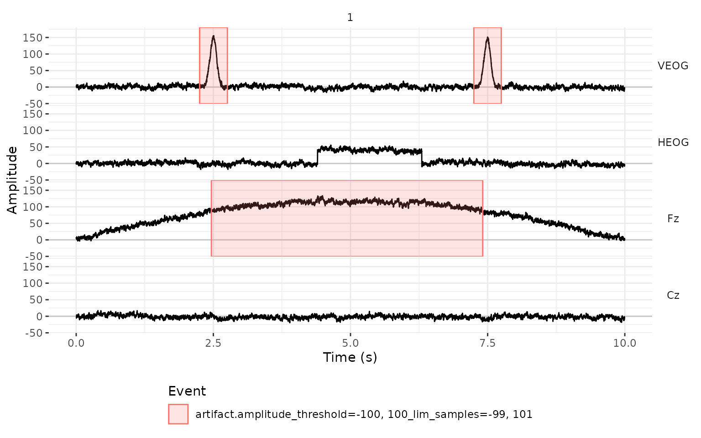
As with the peaks, the drift is a problem: the detector marks the
blinks, and also the four seconds of Fz in which the signal is above 100
µV. eeg_artif_amplitude() is most useful with a wide range,
to catch extreme values such as the ones from a saturated amplifier or a
loose electrode, and after the signal has been high-pass filtered or
baseline corrected.
Which detector should we use?
| Function | What it marks | Typical use | Marks slow drifts? |
|---|---|---|---|
eeg_artif_minmax() |
A large difference between the maximum and the minimum inside a window | Blinks, and large artifacts in any channel | No |
eeg_artif_step() |
A jump between the mean of the two halves of a window | Sideways eye movements in HEOG, and voltage jumps | No |
eeg_artif_peak() |
Peaks beyond a threshold | Locating each blink in VEOG, after filtering | Yes, unless we use .freq
|
eeg_artif_amplitude() |
Samples outside of a range | Extreme values | Yes, unless we use .freq
|
The detectors can be chained, and each one adds its own events:
eeg_artif <- eeg |>
eeg_artif_minmax(-HEOG, .threshold = 100, .window = 200, .unit = "ms") |>
eeg_artif_step(HEOG, .threshold = 30, .window = 200, .unit = "ms")
plot_artifacts(eeg_artif)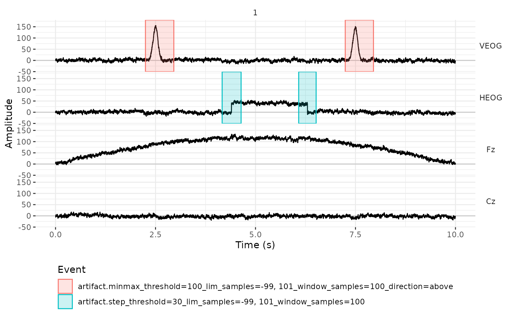
How much to mark around an artifact
A detector tells us where an artifact is, but the artifact usually
starts before that point and ends after it. The argument
.lim sets how much time before and after each detection is
included in the event. By default, it is the size of the window in each
direction (and 200 ms for eeg_artif_amplitude(), which has
no window). Intervals that overlap are merged into one event.
Both .window and .lim are in the unit given
by .unit: seconds ("s", the default),
milliseconds ("ms"), or "samples". For
example, we can mark from 100 ms before to 400 ms after each blink:
eeg |>
eeg_artif_peak(VEOG,
.threshold = 100, .direction = "above", .freq = c(1, 10),
.window = 200, .lim = c(-100, 400), .unit = "ms"
) |>
plot_artifacts()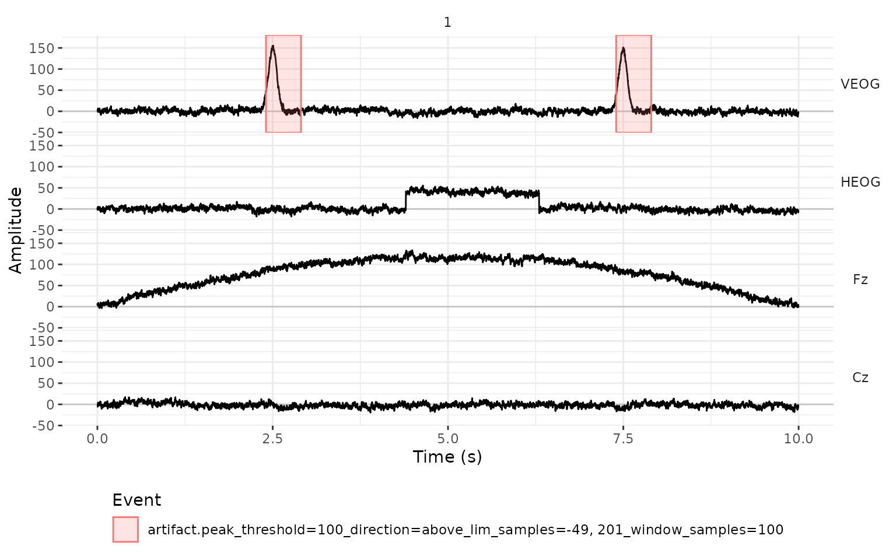
Removing the artifacts
Once we are satisfied with the events,
eeg_events_to_NA() uses them to set parts of the signal to
NA. Its arguments select the events, in the same way as
filter() selects rows of the events table.
In a continuous recording
In a recording that isn’t segmented yet, we usually want to remove
only the marked intervals, and we need .entire_seg = FALSE
for that. Each event affects only its own channel.
eeg_clean <- eeg_artif |>
eeg_events_to_NA(.type == "artifact", .entire_seg = FALSE)
plot_artifacts(eeg_clean)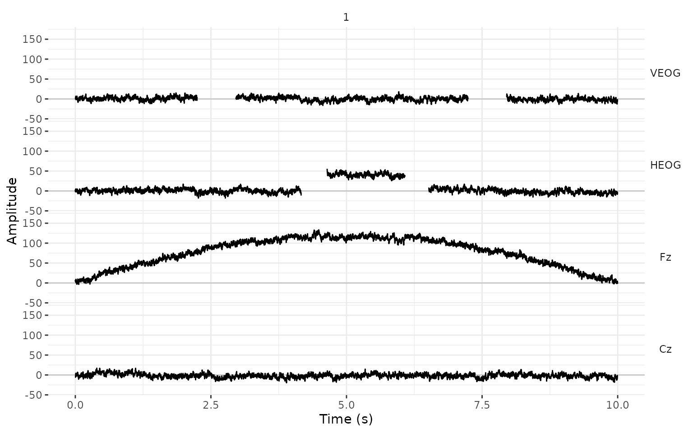
The events that were used are dropped from the events table (unless
we set .drop_events = FALSE), so eeg_clean has
gaps in the signal and no artifact events.
In a segmented recording
In most experiments, we cut the recording into segments around the stimuli, and a segment with an artifact is discarded entirely. Suppose that a stimulus appeared every second, starting 200 ms into the recording. We add the triggers to the events table and cut one segment around each trigger, from 200 ms before it to 800 ms after it.
onsets <- sample_int(seq(from = .2 * fs, by = fs, length.out = 10), .sampling_rate = fs)
triggers <- data.frame(
.id = 1L,
.type = "Stimulus",
.description = "s1",
.initial = onsets,
.final = onsets,
.channel = NA_character_
)
events_tbl(eeg_artif) <- rbind(events_tbl(eeg_artif), triggers)
eeg_seg <- eeg_artif |>
eeg_segment(.description == "s1", .lim = c(-.2, .8))The artifact events moved with the signal, and they now belong to the
segments (.id) where they happened:
events_tbl(eeg_seg) |>
subset(.type == "artifact")
#> .id .type
#> <int> <char>
#> 1: 3 artifact
#> 2: 5 artifact
#> 3: 7 artifact
#> 4: 8 artifact
#> .description
#> <char>
#> 1: minmax_threshold=100_lim_samples=-99, 101_window_samples=100_direction=above
#> 2: step_threshold=30_lim_samples=-99, 101_window_samples=100
#> 3: step_threshold=30_lim_samples=-99, 101_window_samples=100
#> 4: minmax_threshold=100_lim_samples=-99, 101_window_samples=100_direction=above
#> .initial .final .channel
#> <sample_int> <sample_int> <char>
#> 1: 26 381 VEOG
#> 2: -15 222 HEOG
#> 3: -58 160 HEOG
#> 4: 24 377 VEOGIn the plot, each segment gets its own column, and the vertical line at 0 s is the trigger. We only label the time of the trigger and 500 ms after it, so that the labels of neighboring segments don’t overlap:
plot_artifacts(eeg_seg) +
scale_x_continuous("Time (s)", breaks = c(0, .5))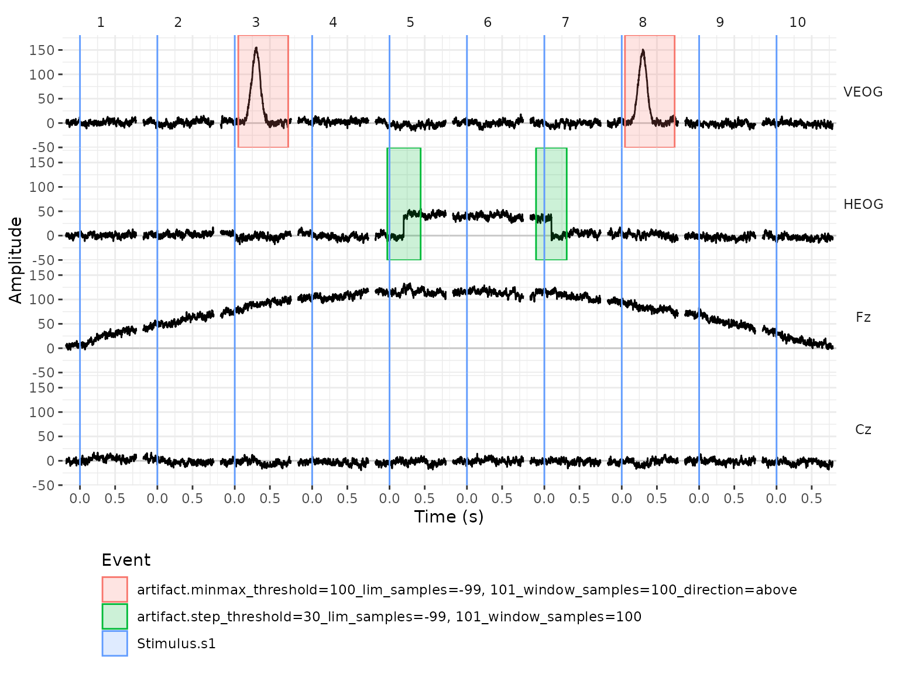
By default (.entire_seg = TRUE),
eeg_events_to_NA() sets to NA the entire
segment of the channel that has the artifact:
eeg_seg_clean <- eeg_seg |>
eeg_events_to_NA(.type == "artifact")
plot_artifacts(eeg_seg_clean) +
scale_x_continuous("Time (s)", breaks = c(0, .5))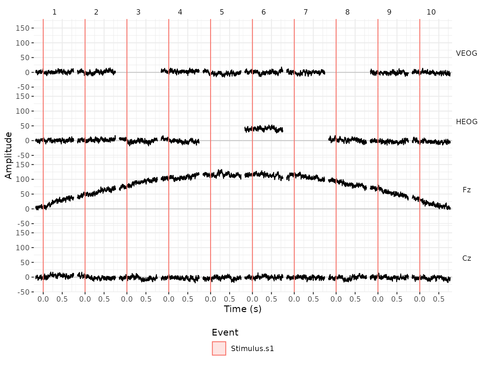
The segments with the blinks are missing only in VEOG, and the
segments in which the eyes moved are missing only in HEOG. (Segment 6 is
kept: the eyes were to the side during all of it, so it has no step.)
That is often what we want for bad channels. For eye artifacts it is
not, because a blink distorts all the channels even when we only detect
it in VEOG. The argument .n_chs handles this: when a
segment has at least that many artifacts, the segment is removed from
every channel.
eeg_seg_clean <- eeg_seg |>
eeg_events_to_NA(.type == "artifact", .n_chs = 1)
plot_artifacts(eeg_seg_clean) +
scale_x_continuous("Time (s)", breaks = c(0, .5))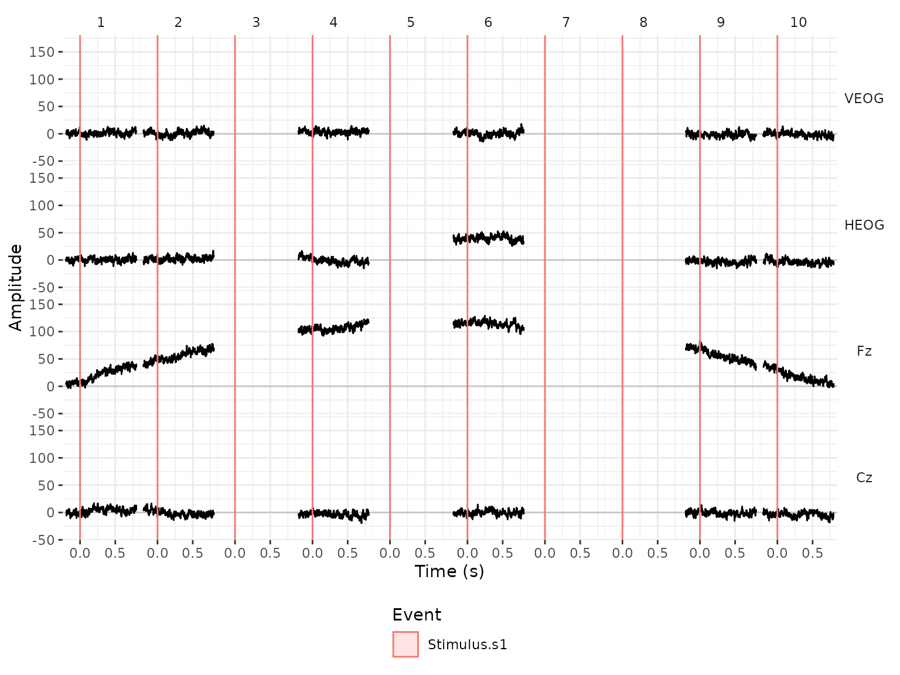
count_complete_cases_tbl() counts the segments that have
no missing values. Six of the ten segments are left:
count_complete_cases_tbl(eeg_seg_clean)
#> N
#> <int>
#> 1: 6The missing values stay in the eeg_lst, and functions
such as mean() need na.rm = TRUE to ignore
them when we compute ERPs with eeg_summarize().
The detectors are a starting point, and it is a good idea to look at
what they marked before removing anything. Besides the plots that we
used here, eeg_browse() opens an app that jumps from one
artifact to the next and lets us select the segments to remove by
hand.